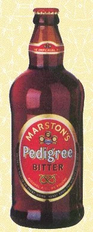
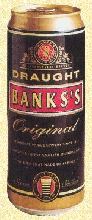

Beber directamente de la botella o de la lata

Aunque no siempre se presta la atención suficiente como para captar los sutiles cambios que el recipiente provoca en la cerveza, es recomendable beberla en copas o vasos.
Beber directamente de botellas y latas de cerveza, una práctica habitual en la actualidad en muchos países, no permite apreciar el sabor de la cerveza en toda su plenitud. La cerveza debe formar su corona de espuma, ya que aporta matices de sabor y, además, actúa como antioxidante mientras se consume el líquido.
En el caso de las latas, al verter la cerveza en el recipiente se aminora en parte el sabor a metal que suele acompañar a los productos así envasados.
